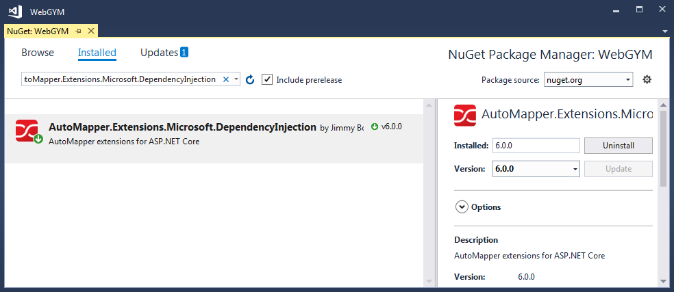
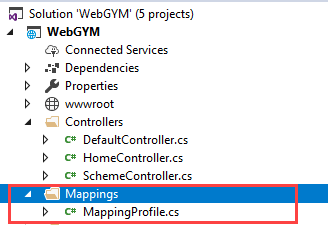
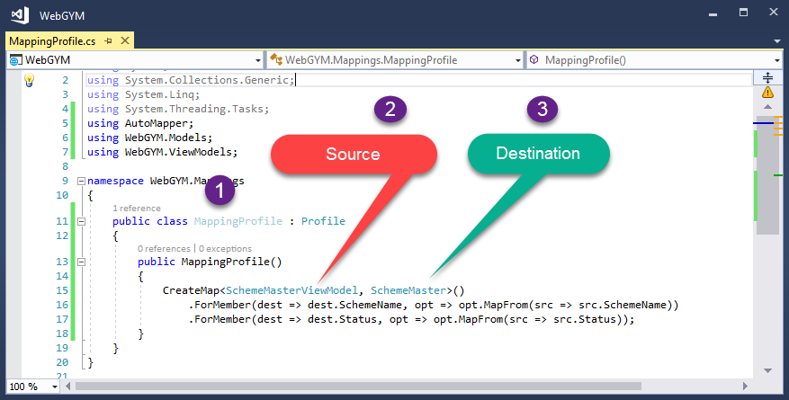

How to set up Automapper in ASP.NET Core
I'm relatively new at .NET, and I decided to tackle .NET Core instead of learning the "old ways". I found a detailed article about setting up AutoMapper for .NET Core here, but is there a more simple walkthrough for a newbie?
Answer
I figured it out! Here's the details:
-
Add the main AutoMapper Package to your solution via NuGet.
-
Add the AutoMapper Dependency Injection Package to your solution via NuGet.
-
Create a new class for a mapping profile. (I made a class in the main solution directory called
MappingProfile.csand add the following code.) I'll use aUserandUserDtoobject as an example.public class MappingProfile : Profile { public MappingProfile() { // Add as many of these lines as you need to map your objects CreateMap<User, UserDto>(); CreateMap<UserDto, User>(); }}
-
Then add the AutoMapperConfiguration in the
Startup.csas shown below:public void ConfigureServices(IServiceCollection services) { // .... Ignore code before this // Auto Mapper Configurations var mapperConfig = new MapperConfiguration(mc => { mc.AddProfile(new MappingProfile()); }); IMapper mapper = mapperConfig.CreateMapper(); services.AddSingleton(mapper); services.AddMvc();
}
-
To invoke the mapped object in code, do something like the following:
public class UserController : Controller { // Create a field to store the mapper object private readonly IMapper _mapper; // Assign the object in the constructor for dependency injection public UserController(IMapper mapper) { _mapper = mapper; } public async Task<IActionResult> Edit(string id) { // Instantiate source object // (Get it from the database or whatever your code calls for) var user = await _context.Users .SingleOrDefaultAsync(u => u.Id == id); // Instantiate the mapped data transfer object // using the mapper you stored in the private field. // The type of the source object is the first type argument // and the type of the destination is the second. // Pass the source object you just instantiated above // as the argument to the _mapper.Map<>() method. var model = _mapper.Map<UserDto>(user); // .... Do whatever you want after that! }
}
Suggest
Step To Use AutoMapper with ASP.NET Core.
Step 1. Installing AutoMapper.Extensions.Microsoft.DependencyInjection from NuGet Package.

Step 2. Create a Folder in Solution to keep Mappings with Name "Mappings".

Step 3. After adding Mapping folder we have added a class with Name " MappingProfile " this name can anything unique and good to understand.
In this class, we are going to Maintain all Mappings.

Step 4. Initializing Mapper in Startup "ConfigureServices"
In Startup Class, we Need to Initialize Profile which we have created and also Register AutoMapper Service.
Mapper.Initialize(cfg => cfg.AddProfile<MappingProfile>()); services.AddAutoMapper();
Code Snippet to show ConfigureServices Method where we need to Initialize and Register AutoMapper.
public class Startup { public Startup(IConfiguration configuration) { Configuration = configuration; } public IConfiguration Configuration { get; } public void ConfigureServices(IServiceCollection services) { services.Configure<CookiePolicyOptions>(options => { // This lambda determines whether user consent for non-essential cookies is needed for a given request. options.CheckConsentNeeded = context => true; options.MinimumSameSitePolicy = SameSiteMode.None; }); // Start Registering and Initializing AutoMapper Mapper.Initialize(cfg => cfg.AddProfile<MappingProfile>()); services.AddAutoMapper(); // End Registering and Initializing AutoMapper services.AddMvc().SetCompatibilityVersion(CompatibilityVersion.Version_2_1); }}
Step 5. Get Output.
To Get Mapped result we need to call AutoMapper.Mapper.Map and pass Proper Destination and Source.
AutoMapper.Mapper.Map<Destination>(source);
CodeSnippet
[HttpPost] public void Post([FromBody] SchemeMasterViewModel schemeMaster) { if (ModelState.IsValid) { var mappedresult = AutoMapper.Mapper.Map<SchemeMaster>(schemeMaster); } }